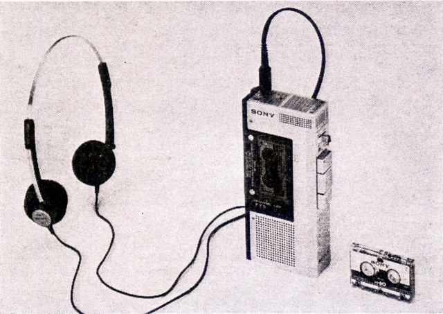
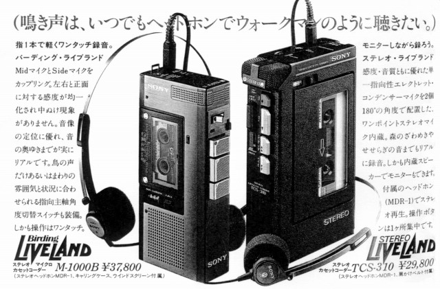

MDR-1について
現在、MDR-1といえば、ソニーの2010年代ヘッドフォンの中核シリーズを指すが、当サイトの対象とする〜2000年の場合、H・AIR（ヘアー）シリーズの初期モデルの一つ、となる。ソニーが旧来の「DR」の型番から、「MDR」型番に移行したとき登場したMDR-3、5、7の兄弟モデルがMDR-1である。しかし、MDR-1については現時点では市販モデルか否かがまだ判明していない。しかし国内流通のモデルだったのは確かで、1980年代初頭に通常のカセットより小さいマイクロカセットによるウォーキングステレオや、録音機能付の小型カセットの付属品として存在したことが確認される。MDR-3より簡略化されたモデルだったようだ。

